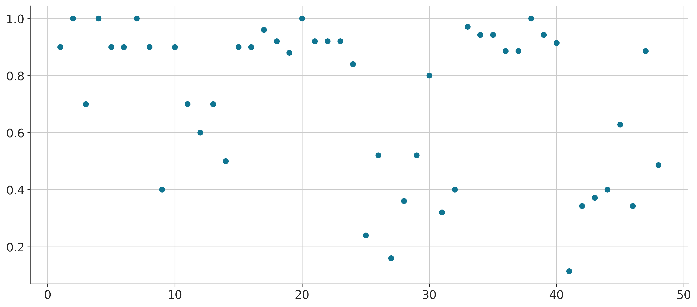
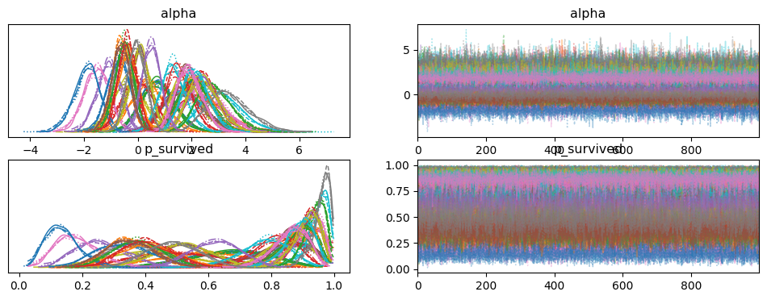
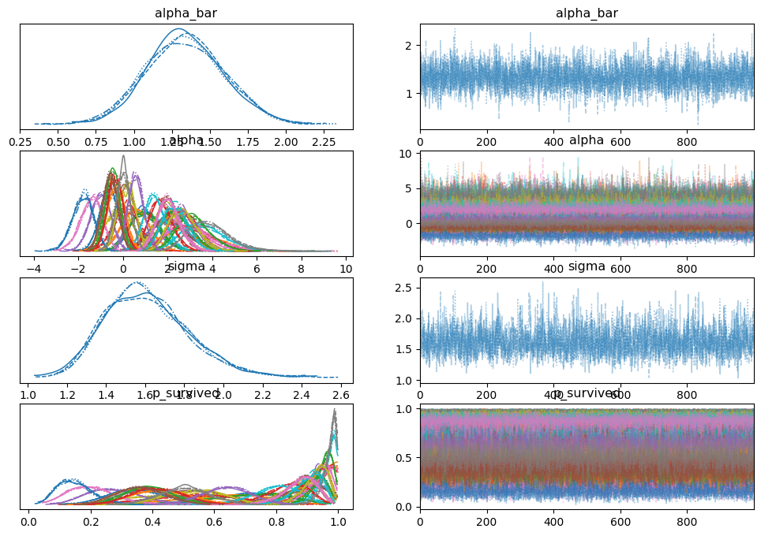
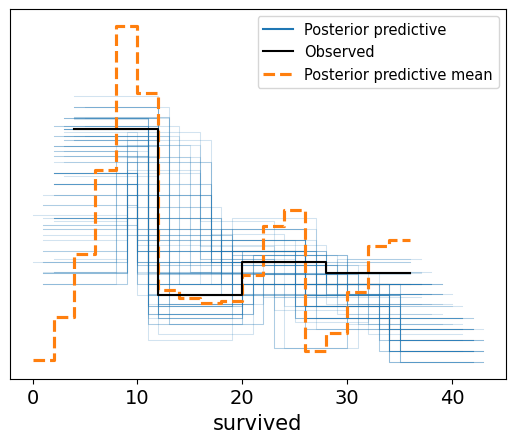
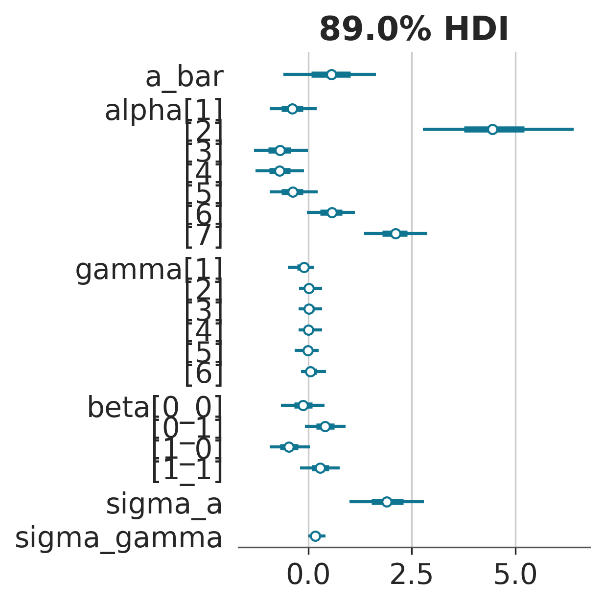
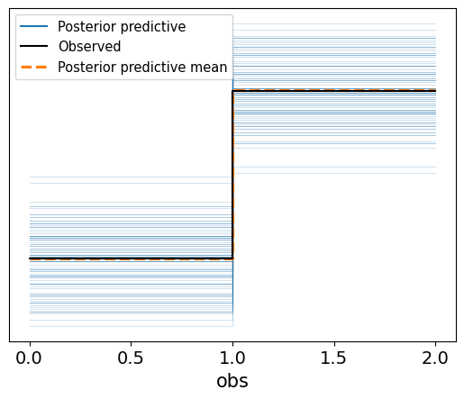

import pandas as pd
import pymc as pm
import arviz as az
az.style.use("arviz-docgrid")Hierarchical Modeling with PyMC
Abstract
Implemented some hierarchical modelling related examples in Statistical Rethinking with PyMC.
Keywords
statistics
NoteTLDR
In order to figure out how to actually deploy fitted Bayesian models and integrate with the (broader) community of python users, here’s an attempt to work through PyMC syntax to figure out how to fit hierarchical Bayesian models using the examples from Statistical Rethinking.
We will use the tadpole survival in ponds dataset used in McElreath’s Statistical Rethinking textbook. The reedfrogs.csv is obtained from here. One can follow along the original textbook starting from Chapter 13.1 Example: Multilevel tadpoles.
# read in data
df = pd.read_csv("reedfrogs.csv", delimiter=";")
df.info()
df.head(5)<class 'pandas.core.frame.DataFrame'>
RangeIndex: 48 entries, 0 to 47
Data columns (total 5 columns):
# Column Non-Null Count Dtype
--- ------ -------------- -----
0 density 48 non-null int64
1 pred 48 non-null object
2 size 48 non-null object
3 surv 48 non-null int64
4 propsurv 48 non-null float64
dtypes: float64(1), int64(2), object(2)
memory usage: 2.0+ KB| density | pred | size | surv | propsurv | |
|---|---|---|---|---|---|
| 0 | 10 | no | big | 9 | 0.9 |
| 1 | 10 | no | big | 10 | 1.0 |
| 2 | 10 | no | big | 7 | 0.7 |
| 3 | 10 | no | big | 10 | 1.0 |
| 4 | 10 | no | small | 9 | 0.9 |
Code
import matplotlib.pyplot as plt
df.sort_values(by='density')
plt.scatter(x = [i for i in range(1, 49)], y = df['propsurv'])
We will focus on the number surviving (surv) out of an intial count (density).
No pooling
Math model:
\[ \begin{align} \texttt{surv}_i &\sim \text{Binomial}(\texttt{density}_i, p_i) \\ \text{logit}(p_i) &= \alpha_{i} \\ \alpha_j &\sim \mathcal{N}(0, 1.5), j \in [48] \end{align} \]
# corresponds to R code 13.2
with pm.Model() as model_1:
# prior
alpha = pm.Normal("alpha", 0, 1.5, shape = len(df))
# link
p_survived = pm.Deterministic("p_survived", pm.math.invlogit(alpha))
# likelihood
survived = pm.Binomial("survived", n=df.density, p=p_survived, observed=df.surv)
model_1_trace = pm.sample()
model_1_trace = pm.compute_log_likelihood(model_1_trace)
# posterior predictive check
pm.sample_posterior_predictive(model_1_trace, extend_inferencedata=True)# check output
az.summary(model_1_trace)| mean | sd | hdi_3% | hdi_97% | mcse_mean | mcse_sd | ess_bulk | ess_tail | r_hat | |
|---|---|---|---|---|---|---|---|---|---|
| alpha[0] | 1.721 | 0.755 | 0.320 | 3.100 | 0.008 | 0.014 | 8866.0 | 2812.0 | 1.0 |
| alpha[1] | 2.400 | 0.894 | 0.815 | 4.131 | 0.011 | 0.017 | 7600.0 | 2746.0 | 1.0 |
| alpha[2] | 0.746 | 0.618 | -0.469 | 1.847 | 0.007 | 0.012 | 8869.0 | 2820.0 | 1.0 |
| alpha[3] | 2.382 | 0.887 | 0.795 | 4.096 | 0.010 | 0.019 | 9025.0 | 2466.0 | 1.0 |
| alpha[4] | 1.737 | 0.787 | 0.282 | 3.234 | 0.009 | 0.015 | 7840.0 | 2479.0 | 1.0 |
| ... | ... | ... | ... | ... | ... | ... | ... | ... | ... |
| p_survived[43] | 0.405 | 0.079 | 0.263 | 0.556 | 0.001 | 0.001 | 8347.0 | 2943.0 | 1.0 |
| p_survived[44] | 0.621 | 0.080 | 0.470 | 0.769 | 0.001 | 0.002 | 9117.0 | 2699.0 | 1.0 |
| p_survived[45] | 0.351 | 0.078 | 0.202 | 0.498 | 0.001 | 0.001 | 8229.0 | 2453.0 | 1.0 |
| p_survived[46] | 0.860 | 0.055 | 0.752 | 0.948 | 0.001 | 0.001 | 7756.0 | 2918.0 | 1.0 |
| p_survived[47] | 0.486 | 0.083 | 0.336 | 0.642 | 0.001 | 0.002 | 8102.0 | 2411.0 | 1.0 |
96 rows × 9 columns
az.plot_trace(model_1_trace)array([[<Axes: title={'center': 'alpha'}>, <Axes: title={'center': 'alpha'}>],
[<Axes: title={'center': 'p_survived'}>, <Axes: title={'center': 'p_survived'}>]], dtype=object)
# pp check
az.plot_ppc(model_1_trace, num_pp_samples=100)
With pooling
Math model: \[ \begin{align} \texttt{surv}_i &\sim \text{Binomial}(N_i, p_i) \\ \text{logit}(p_i) &\sim \alpha_{\text{TANK}[i]} \\ \alpha_j &\sim \mathcal{N}(\bar{\alpha}, \sigma), j \in [48] \\ \bar{\alpha} &\sim \mathcal{N}(0, 1.5) \\ \sigma &\sim \text{Exponential}(1) \end{align} \]
# corresponds to R code 13.3
with pm.Model() as model_2:
# hyperprior
sigma = pm.Exponential("sigma", 1)
alpha_bar = pm.Normal("alpha_bar", 0, 1.5)
# prior
alpha = pm.Normal("alpha", mu=alpha_bar, sigma=sigma, shape=len(df))
# link
p_survived = pm.Deterministic("p_survived", pm.math.invlogit(alpha))
# likelihood
survived = pm.Binomial("survived", n=df.density, p=p_survived, observed=df.surv)
model_2_trace = pm.sample()
model_2_trace = pm.compute_log_likelihood(model_2_trace)
# posterior predictive check
pm.sample_posterior_predictive(model_2_trace, extend_inferencedata=True)# check posterior fit
az.summary(model_2_trace, round_to=2)| mean | sd | hdi_3% | hdi_97% | mcse_mean | mcse_sd | ess_bulk | ess_tail | r_hat | |
|---|---|---|---|---|---|---|---|---|---|
| alpha_bar | 1.35 | 0.26 | 0.88 | 1.85 | 0.00 | 0.00 | 5063.43 | 3030.24 | 1.0 |
| alpha[0] | 2.13 | 0.89 | 0.46 | 3.78 | 0.01 | 0.02 | 7276.89 | 2643.59 | 1.0 |
| alpha[1] | 3.10 | 1.12 | 1.12 | 5.18 | 0.02 | 0.02 | 5023.20 | 2541.04 | 1.0 |
| alpha[2] | 0.99 | 0.67 | -0.20 | 2.27 | 0.01 | 0.01 | 7794.92 | 2864.81 | 1.0 |
| alpha[3] | 3.09 | 1.13 | 1.09 | 5.27 | 0.02 | 0.02 | 4801.68 | 2156.00 | 1.0 |
| ... | ... | ... | ... | ... | ... | ... | ... | ... | ... |
| p_survived[43] | 0.42 | 0.08 | 0.27 | 0.57 | 0.00 | 0.00 | 5566.55 | 2445.12 | 1.0 |
| p_survived[44] | 0.64 | 0.08 | 0.48 | 0.78 | 0.00 | 0.00 | 7655.68 | 2726.25 | 1.0 |
| p_survived[45] | 0.36 | 0.08 | 0.22 | 0.51 | 0.00 | 0.00 | 8198.61 | 2725.24 | 1.0 |
| p_survived[46] | 0.88 | 0.05 | 0.78 | 0.97 | 0.00 | 0.00 | 5496.54 | 2647.30 | 1.0 |
| p_survived[47] | 0.50 | 0.08 | 0.34 | 0.65 | 0.00 | 0.00 | 8799.54 | 3138.66 | 1.0 |
98 rows × 9 columns
az.plot_trace(model_2_trace)array([[<Axes: title={'center': 'alpha_bar'}>,
<Axes: title={'center': 'alpha_bar'}>],
[<Axes: title={'center': 'alpha'}>,
<Axes: title={'center': 'alpha'}>],
[<Axes: title={'center': 'sigma'}>,
<Axes: title={'center': 'sigma'}>],
[<Axes: title={'center': 'p_survived'}>,
<Axes: title={'center': 'p_survived'}>]], dtype=object)
# pp check
az.plot_ppc(model_2_trace, num_pp_samples=100)
# TODO -- figure out how to plot ecdf Model comparison
az.compare({'unpooled': model_1_trace, 'pooled': model_2_trace})| rank | elpd_loo | p_loo | elpd_diff | weight | se | dse | warning | scale | |
|---|---|---|---|---|---|---|---|---|---|
| pooled | 0 | -111.604519 | 32.480297 | 0.000000 | 1.0 | 4.253222 | 0.00000 | True | log |
| unpooled | 1 | -120.496778 | 38.884615 | 8.892259 | 0.0 | 2.424403 | 2.83376 | True | log |
Observe that the pooled model is better than the unpooled model.
More complex model — multilevel Chimpanzees
The tadpole example is “easy” as it does not involve complex grouping, as each row is its own group. Next we will explore the chimpanzee dataset for something a bit more complex to demonstrate the power of the PyMC syntax.
The chimpanzee data is obtained from here. The example we’re looking at is 13.3.1 Multilevel chimpanzees. We will create a new column, treatment, that is a combination of prosoc_left and condition.
Here’s the math model: \[ \begin{align} \texttt{pulled\_left}_i &\sim \text{Binomial}(1, p_i) \\ \text{logit}(p_i) &= \alpha_{\texttt{actor}[i]} + \gamma_{\texttt{block}[i]} + \beta_{\text{TREATMENT}[i]} \\ \beta_j &\sim \mathcal{N}(0, 0.5), j \in [4] \\ \alpha_j &\sim \mathcal{N}(\bar{\alpha}, \sigma_\alpha), j \in [7] \\ \gamma_j &\sim \mathcal{N}(0, \sigma_\gamma), j \in [6] \\ \bar{\alpha} &\sim \mathcal{N}(0, 1.5) \\ \sigma_\alpha &\sim \text{Exponential}(1) \\ \sigma_\gamma &\sim \text{Exponential}(1) \end{align} \]
# read in the data
df = pd.read_csv("chimpanzees.csv", delimiter=";")
# create a new treatment column
df['treatment'] = df['condition'].astype(str) + "_" + df['prosoc_left'].astype(str)
df.info()<class 'pandas.core.frame.DataFrame'>
RangeIndex: 504 entries, 0 to 503
Data columns (total 9 columns):
# Column Non-Null Count Dtype
--- ------ -------------- -----
0 actor 504 non-null int64
1 recipient 252 non-null float64
2 condition 504 non-null int64
3 block 504 non-null int64
4 trial 504 non-null int64
5 prosoc_left 504 non-null int64
6 chose_prosoc 504 non-null int64
7 pulled_left 504 non-null int64
8 treatment 504 non-null object
dtypes: float64(1), int64(7), object(1)
memory usage: 35.6+ KB# factorize to get 0-based indices
actor_idx, actors = pd.factorize(df['actor'], sort=True)
block_idx, blocks = pd.factorize(df['block'], sort=True)
treat_idx, treatments = pd.factorize(df['treatment'], sort=True)# define and fit model
with pm.Model() as chimp_model:
chimp_model.add_coord("actors", actors)
chimp_model.add_coord("blocks", blocks)
chimp_model.add_coord("treatments", treatments)
# hyperpriors
a_bar = pm.Normal("a_bar", 0, 1.5)
sigma_a = pm.Exponential("sigma_a", 1)
sigma_gamma = pm.Exponential("sigma_gamma", 1)
# prior
alpha = pm.Normal("alpha", mu=a_bar, sigma=sigma_a, dims="actors")
gamma = pm.Normal("gamma", mu=0, sigma=sigma_gamma, dims="blocks")
beta = pm.Normal("beta", mu=0, sigma=0.5, dims="treatments")
# link
logits = alpha[actor_idx] + gamma[block_idx] + beta[treat_idx]
# likelihood
obs = pm.Bernoulli("obs", logit_p=logits, observed=df['pulled_left'])with chimp_model:
chimp_model_trace = pm.sample(draws=1000, tune=1000, progressbar=False)
chimp_model_trace = pm.compute_log_likelihood(chimp_model_trace)
# posterior predictive check
pm.sample_posterior_predictive(chimp_model_trace, extend_inferencedata=True)Initializing NUTS using jitter+adapt_diag...
Multiprocess sampling (4 chains in 4 jobs)
NUTS: [a_bar, sigma_a, sigma_gamma, alpha, gamma, beta]
Sampling 4 chains for 1_000 tune and 1_000 draw iterations (4_000 + 4_000 draws total) took 2 seconds.
There were 23 divergences after tuning. Increase `target_accept` or reparameterize.
The effective sample size per chain is smaller than 100 for some parameters. A higher number is needed for reliable rhat and ess computation. See https://arxiv.org/abs/1903.08008 for detailsComputing ... ━━━━━━━━━━━━━━━━━━━━━━━━━━━━━━━━━━━━━━━━ 100% 0:00:00:--:--
Sampling: [obs]Sampling ... ━━━━━━━━━━━━━━━━━━━━━━━━━━━━━━━━━━━━━━━━ 100% 0:00:00 / 0:00:00━━━━━━━ 58% 0:00:01 / 0:00:00
The above model will give you a warning about “22 divergences after tuning”, which is similar to what the textbook says. For now we will ignore this and proceed to exmaine some of the outputs here:
az.summary(chimp_model_trace)| mean | sd | hdi_3% | hdi_97% | mcse_mean | mcse_sd | ess_bulk | ess_tail | r_hat | |
|---|---|---|---|---|---|---|---|---|---|
| a_bar | 0.598 | 0.764 | -0.835 | 2.057 | 0.017 | 0.016 | 1967.0 | 1814.0 | 1.00 |
| alpha[1] | -0.340 | 0.364 | -1.054 | 0.320 | 0.011 | 0.006 | 1144.0 | 1904.0 | 1.00 |
| alpha[2] | 4.750 | 1.377 | 2.580 | 7.257 | 0.038 | 0.058 | 1669.0 | 1533.0 | 1.00 |
| alpha[3] | -0.646 | 0.369 | -1.369 | 0.010 | 0.012 | 0.006 | 1022.0 | 1674.0 | 1.00 |
| alpha[4] | -0.647 | 0.367 | -1.343 | 0.044 | 0.012 | 0.006 | 1016.0 | 1991.0 | 1.00 |
| alpha[5] | -0.339 | 0.362 | -1.034 | 0.316 | 0.012 | 0.006 | 936.0 | 1930.0 | 1.00 |
| alpha[6] | 0.599 | 0.368 | -0.091 | 1.292 | 0.012 | 0.006 | 932.0 | 1861.0 | 1.00 |
| alpha[7] | 2.134 | 0.463 | 1.321 | 3.009 | 0.013 | 0.007 | 1263.0 | 1845.0 | 1.00 |
| gamma[1] | -0.185 | 0.224 | -0.612 | 0.167 | 0.006 | 0.007 | 1506.0 | 1752.0 | 1.00 |
| gamma[2] | 0.039 | 0.192 | -0.314 | 0.417 | 0.004 | 0.006 | 2188.0 | 1945.0 | 1.00 |
| gamma[3] | 0.055 | 0.190 | -0.269 | 0.459 | 0.004 | 0.006 | 2312.0 | 1953.0 | 1.00 |
| gamma[4] | 0.008 | 0.188 | -0.350 | 0.375 | 0.004 | 0.007 | 2185.0 | 1671.0 | 1.00 |
| gamma[5] | -0.037 | 0.198 | -0.439 | 0.332 | 0.004 | 0.006 | 2412.0 | 1605.0 | 1.00 |
| gamma[6] | 0.116 | 0.199 | -0.190 | 0.545 | 0.005 | 0.006 | 2028.0 | 1946.0 | 1.00 |
| beta[0_0] | -0.146 | 0.296 | -0.720 | 0.380 | 0.009 | 0.004 | 1047.0 | 1902.0 | 1.00 |
| beta[0_1] | 0.382 | 0.296 | -0.192 | 0.923 | 0.009 | 0.005 | 1040.0 | 1949.0 | 1.01 |
| beta[1_0] | -0.490 | 0.296 | -1.022 | 0.084 | 0.009 | 0.005 | 1023.0 | 1604.0 | 1.00 |
| beta[1_1] | 0.265 | 0.296 | -0.303 | 0.807 | 0.009 | 0.005 | 1025.0 | 2168.0 | 1.01 |
| sigma_a | 2.045 | 0.682 | 1.046 | 3.378 | 0.019 | 0.022 | 1650.0 | 1385.0 | 1.00 |
| sigma_gamma | 0.231 | 0.173 | 0.032 | 0.531 | 0.006 | 0.006 | 513.0 | 555.0 | 1.01 |
Code
az.plot_forest(chimp_model_trace, figsize=(4,4), combined=True, hdi_prob=0.89)array([<Axes: title={'center': '89.0% HDI'}>], dtype=object)
Dealing with divergent transitions
The first trick is to increase the target acceptance rate. In stan related code, this is done by pushing adapt_delta = 0.95 to adapt_delta=0.99.
with chimp_model:
chimp_model_trace = pm.sample(progressbar=False, target_accept=0.99)
# chimp_model_trace = pm.compute_log_likelihood(chimp_model_trace)
# posterior predictive check
# pm.sample_posterior_predictive(chimp_model_trace, extend_inferencedata=True)Initializing NUTS using jitter+adapt_diag...
Multiprocess sampling (4 chains in 4 jobs)
NUTS: [a_bar, sigma_a, sigma_gamma, alpha, gamma, beta]
Sampling 4 chains for 1_000 tune and 1_000 draw iterations (4_000 + 4_000 draws total) took 8 seconds.
There were 78 divergences after tuning. Increase `target_accept` or reparameterize.
The rhat statistic is larger than 1.01 for some parameters. This indicates problems during sampling. See https://arxiv.org/abs/1903.08008 for details
The effective sample size per chain is smaller than 100 for some parameters. A higher number is needed for reliable rhat and ess computation. See https://arxiv.org/abs/1903.08008 for detailsThis doesn’t seem to solve our problem, so we will turn to the second trick: reparameterization.
# R code 13.29
# define and fit model
with pm.Model() as chimp_model_2:
chimp_model_2.add_coord("actors", actors)
chimp_model_2.add_coord("blocks", blocks)
chimp_model_2.add_coord("treatments", treatments)
# hyperpriors
a_bar = pm.Normal("a_bar", 0, 1.5)
sigma_a = pm.Exponential("sigma_a", 1)
sigma_gamma = pm.Exponential("sigma_gamma", 1)
# prior
z = pm.Normal("z", mu=0, sigma=1, dims="actors")
x = pm.Normal("x", mu=0, sigma=1, dims="blocks")
beta = pm.Normal("beta", mu=0, sigma=0.5, dims="treatments")
# link
logits = a_bar + z[actor_idx] * sigma_a + x[block_idx] * sigma_gamma + beta[treat_idx]
# likelihood
obs = pm.Bernoulli("obs", logit_p=logits, observed=df['pulled_left'])with chimp_model_2:
chimp_model_2_trace = pm.sample(draws=1000, tune=1000, progressbar=False)
chimp_model_2_trace = pm.compute_log_likelihood(chimp_model_2_trace)
# posterior predictive check
pm.sample_posterior_predictive(chimp_model_2_trace, extend_inferencedata=True)Initializing NUTS using jitter+adapt_diag...
Multiprocess sampling (4 chains in 4 jobs)
NUTS: [a_bar, sigma_a, sigma_gamma, z, x, beta]
Sampling 4 chains for 1_000 tune and 1_000 draw iterations (4_000 + 4_000 draws total) took 3 seconds.Computing ... ━━━━━━━━━━━━━━━━━━━━━━━━━━━━━━━━━━━━━━━━ 100% 0:00:00:--:--
Sampling: [obs]Sampling ... ━━━━━━━━━━━━━━━━━━━━━━━━━━━━━━━━━━━━━━━━ 100% 0:00:00 / 0:00:00━━━━━━━━━━━━━━ 50% 0:00:01 / 0:00:00
No divergent transitions!
az.summary(chimp_model_2_trace)| mean | sd | hdi_3% | hdi_97% | mcse_mean | mcse_sd | ess_bulk | ess_tail | r_hat | |
|---|---|---|---|---|---|---|---|---|---|
| a_bar | 0.601 | 0.715 | -0.685 | 2.010 | 0.022 | 0.018 | 1114.0 | 1269.0 | 1.0 |
| z[1] | -0.505 | 0.376 | -1.231 | 0.173 | 0.011 | 0.007 | 1261.0 | 2055.0 | 1.0 |
| z[2] | 2.118 | 0.659 | 0.947 | 3.357 | 0.015 | 0.010 | 1853.0 | 2265.0 | 1.0 |
| z[3] | -0.671 | 0.390 | -1.401 | 0.060 | 0.011 | 0.007 | 1207.0 | 1608.0 | 1.0 |
| z[4] | -0.667 | 0.389 | -1.415 | 0.017 | 0.011 | 0.006 | 1204.0 | 1867.0 | 1.0 |
| z[5] | -0.511 | 0.373 | -1.184 | 0.205 | 0.011 | 0.006 | 1218.0 | 1828.0 | 1.0 |
| z[6] | -0.007 | 0.354 | -0.632 | 0.685 | 0.010 | 0.006 | 1277.0 | 1956.0 | 1.0 |
| z[7] | 0.809 | 0.462 | -0.019 | 1.713 | 0.012 | 0.009 | 1450.0 | 1409.0 | 1.0 |
| x[1] | -0.647 | 0.872 | -2.348 | 0.954 | 0.015 | 0.015 | 3455.0 | 3043.0 | 1.0 |
| x[2] | 0.146 | 0.859 | -1.548 | 1.737 | 0.014 | 0.016 | 3701.0 | 2187.0 | 1.0 |
| x[3] | 0.201 | 0.838 | -1.358 | 1.839 | 0.013 | 0.016 | 4106.0 | 2465.0 | 1.0 |
| x[4] | 0.040 | 0.853 | -1.706 | 1.560 | 0.014 | 0.015 | 3760.0 | 2614.0 | 1.0 |
| x[5] | -0.128 | 0.868 | -1.750 | 1.506 | 0.014 | 0.015 | 4087.0 | 2769.0 | 1.0 |
| x[6] | 0.473 | 0.883 | -1.293 | 2.065 | 0.014 | 0.015 | 3779.0 | 2687.0 | 1.0 |
| beta[0_0] | -0.132 | 0.305 | -0.709 | 0.452 | 0.006 | 0.005 | 2412.0 | 2240.0 | 1.0 |
| beta[0_1] | 0.399 | 0.304 | -0.181 | 0.956 | 0.006 | 0.004 | 2635.0 | 2679.0 | 1.0 |
| beta[1_0] | -0.480 | 0.306 | -1.057 | 0.076 | 0.006 | 0.004 | 2255.0 | 2672.0 | 1.0 |
| beta[1_1] | 0.285 | 0.302 | -0.302 | 0.825 | 0.006 | 0.004 | 2409.0 | 2812.0 | 1.0 |
| sigma_a | 2.045 | 0.662 | 0.951 | 3.243 | 0.020 | 0.019 | 1180.0 | 1467.0 | 1.0 |
| sigma_gamma | 0.202 | 0.169 | 0.000 | 0.488 | 0.004 | 0.004 | 1427.0 | 1912.0 | 1.0 |
az.plot_ppc(chimp_model_2_trace, num_pp_samples=100)
Code
az.plot_forest(chimp_model_2_trace, figsize=(4,6), combined=True, hdi_prob=0.89)array([<Axes: title={'center': '89.0% HDI'}>], dtype=object)